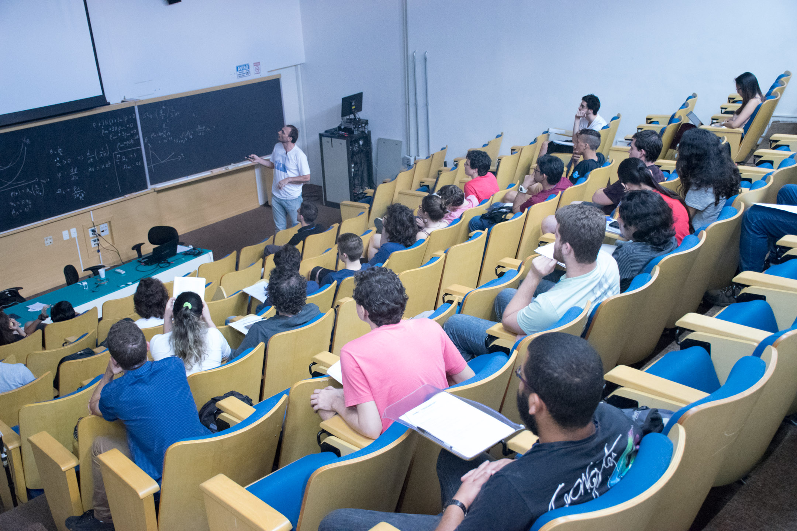

  <section class="py-5 bg-light" id="evento">
    <div class="container">
      <h2 class="titulo-secao">INSCRIÇAO</h2>
        <!-- Columna de texto -->
      <p> O XLVIII Congresso Paulo Leal Ferreira ocorrerá de 14 a 17 de outubro de 2024, no Instituto de Física Teórica 
        da UNESP. Todas as submissões de trabalho estão sujeitas a um processo de seleção, devido às limitações de tempo na 
        programação.</p>
      <p>O evento é uma excelente oportunidade para estudantes se familiarizarem com o ambiente acadêmico de 
        apresentações e palestras, além de desenvolverem sua comunicação científica.
      </p>
      <!-- Recuadro destacado -->
      <div class="alert alert-info d-flex align-items-start alerta-importante"  >
        <i class="bi bi-info-circle-fill me-2 fs-3"></i>
        <div>
        <strong>Importante:</strong> Submeter um resumo <strong>não é obrigatório</strong> para participar do evento, mas é <strong>fortemente encorajado</strong>,
        pois promove a interação entre participantes de diferentes áreas da Física.
        </div>
      </div>

      <div class="row align-items-center">
        <!-- Columna de imagem -->
        <div class="col-lg-4 text-center">
          
        </div>
        
        <!-- Columna de texto -->
        <div class="col-lg-8 text-lg-start mb-0">
          <h3 class="subtitulo-secao mt-4 mb-3"> <i class="bi bi-calendar3 me-2"></i> PRAZOS DE INSCRIÇAO</h3>
          <ul>
            <li><strong>Com solicitação de apoio financeiro:</strong> 30 de junho - 03 de agosto</li>
            <li><strong>Sem solicitação de apoio financeiro:</strong> 04 - 17 de agosto</li>
          </ul>
          <h3 class="subtitulo-secao mt-4 mb-3"> <i class="bi bi-currency-dollar mi-2 me-2"></i> APOIO FINANCEIRO</h3>
          <p class="mb-1"> Poderá ser oferecido <strong>auxílio para hospedagem e/ou transporte</strong> a participantes do evento.
          </p><p> A solicitação deve ser feita diretamente no <strong>formulário de inscrição</strong>, onde também serão informados 
            os detalhes sobre a seleção.
          </p>
        </div>
      </div>

      <h3 class="subtitulo-secao mt-4 mb-3"> <i class="bi bi-file-earmark-text me-2"></i> SUBMISSÃO DE RESUMOS</h3>
      <ul>
        <li>Os resumos devem ser apresentados em <strong>português</strong>.</li>
        <li>Se houver fórmulas ou símbolos matemáticos, <strong>sinta-se à vontade para usar LaTeX!</strong></li>
        <li>O arquivo deve ser em formato PDF, com <strong>até 500 caracteres</strong> e no máximo 2MB.</li>
      </ul>

      <h3 class="subtitulo-secao mt-4 mb-3"> <i class="bi bi-mic me-2"></i> APRESENTAÇOES SELECIONADAS</h3>
      <ul>
        <li>As apresentações deverão ser feitas em <strong>português</strong>.</li>
        <li>Os <strong>slides</strong> que acompanham as comunicações orais devem ser enviados em formato PDF, para o e-mail da organização
            (cplf.ift@gmail.com) <strong>até às 23h59 do dia 13 de outubro</strong> de 2025 (véspera do congresso).</li>
      </ul>

      <h3 class="subtitulo-secao mt-4 mb-3"> <i class="bi bi-card-list me-2"></i> REGRAS ESSENCIAIS DE CONVIVÊNCIA</h3>
        <ul class="list-group list-group-flush">
          <li class="list-group-item">
            <strong>1. Seja pontual nas atividades</strong><br>
            Respeitar os horários é fundamental para o bom funcionamento da programação e demonstra consideração com palestrantes e colegas.
          </li>
          <li class="list-group-item">
            <strong>2. Evite interrupções durante as apresentações</strong><br>
            Anote suas perguntas e contribuições para o momento apropriado. Isso garante que todos possam acompanhar sem distrações.
          </li>
          <li class="list-group-item">
            <strong>3. Não fotografe ou grave apresentações sem permissão</strong><br>
            Alguns palestrantes podem apresentar resultados inéditos. Sempre peça autorização antes de registrar qualquer conteúdo.
          </li>
          <li class="list-group-item">
            <strong>4. Participe com respeito e abertura</strong><br>
            O CPLF reúne pessoas de diferentes origens e trajetórias. Valorizar essa diversidade enriquece a experiência de todos.
          </li>
          <li class="list-group-item">
            <strong>5. Siga as orientações da equipe organizadora</strong><br>
            Em caso de dúvidas, imprevistos ou necessidade de suporte, procure os membros da organização. Estamos aqui para ajudar!
          </li>
        </ul>
        <p class="mt-4">
          ✨ Vamos construir juntos um congresso acolhedor, estimulante e inesquecível!
        </p>

      <div class="text-center mt-4 mb-3"><a href="https://docs.google.com/forms/d/e/1FAIpQLScrqG54XMvbLDherDsg9iuLBzozDuYHtvdSJ4mGwtVbZmeQ0w/viewform?usp=header" class="btn btn-cplf1 btn-lg mt-0 mb-3">Formulario de inscripción</a>
      </div>
    </div>
  </section>
